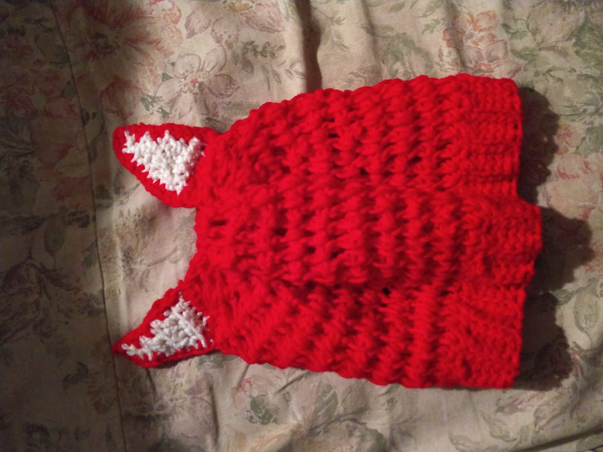
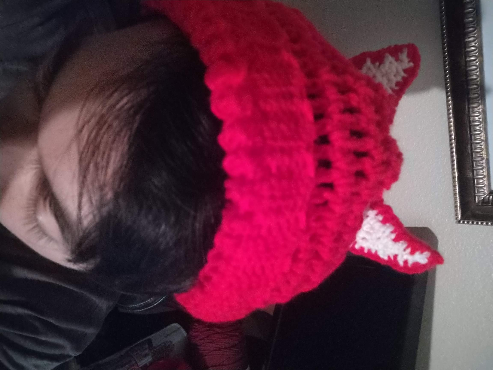
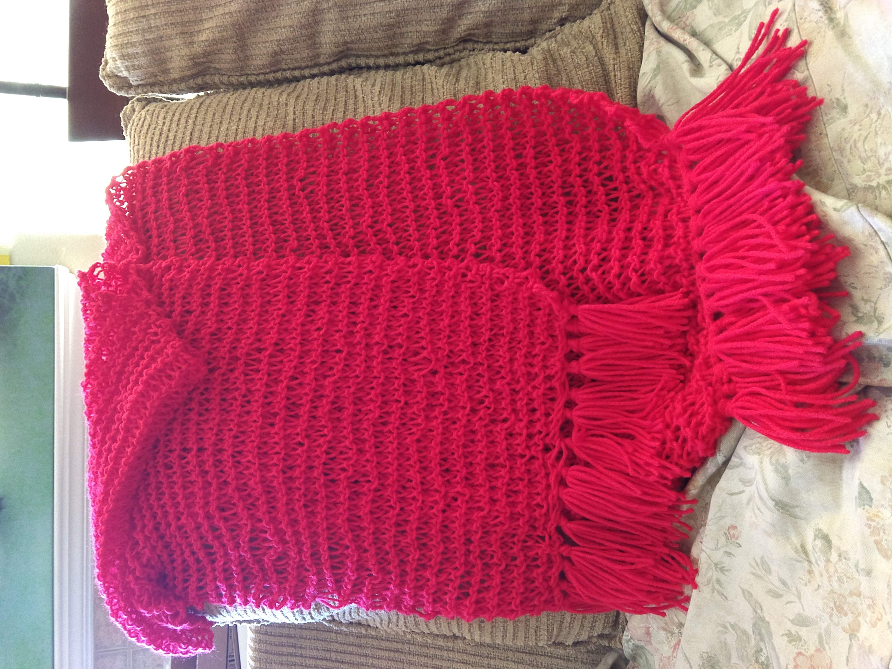
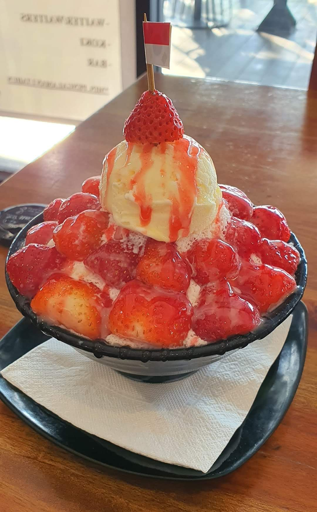
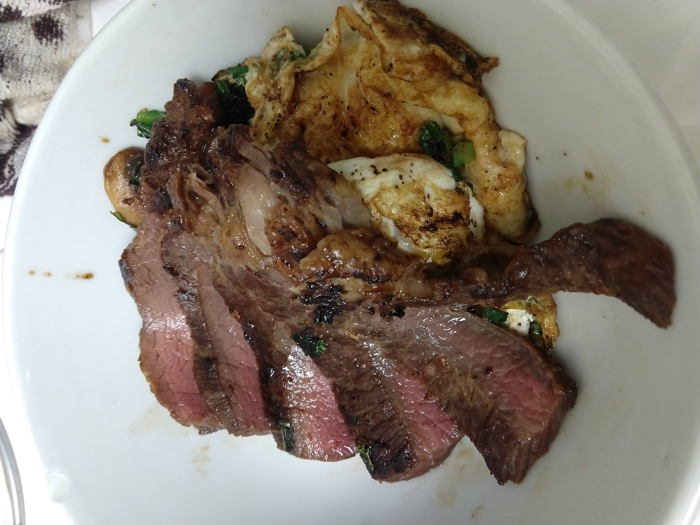
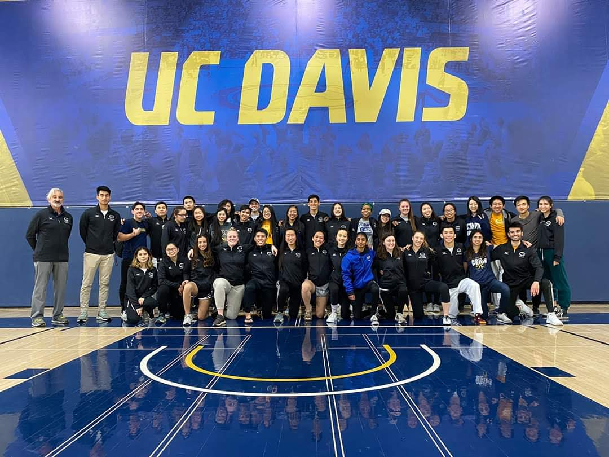
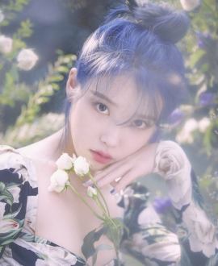

This is one of the first hats I ever crocheted!


Here I'm wearing one of the first hats I ever crocheted!

This is the first scarf I ever knitted!. It's over 170cm long.

This is a school of whales that I crocheted. Whales were the first thing that I learned how to crochet!

This is bingsu, a korean-style shaved ice. It's one of my favorite deserts!

I love to cook!...whether it's getting my hands on delicious ingredients or trying new, promising recipes.

I started practicing taekwondo at UC Davis. I really appreciate the power behind its flashy kicks!

This is a wallpaper of the Japanese animation "Kimi No Na Wa." It's one of my favorite movies!

IU, or Lee Ji-eun, is one of my favorite singers/artists!

I like K-pop because it's very easy to listen to. My favorite K-pop group is TWICE!